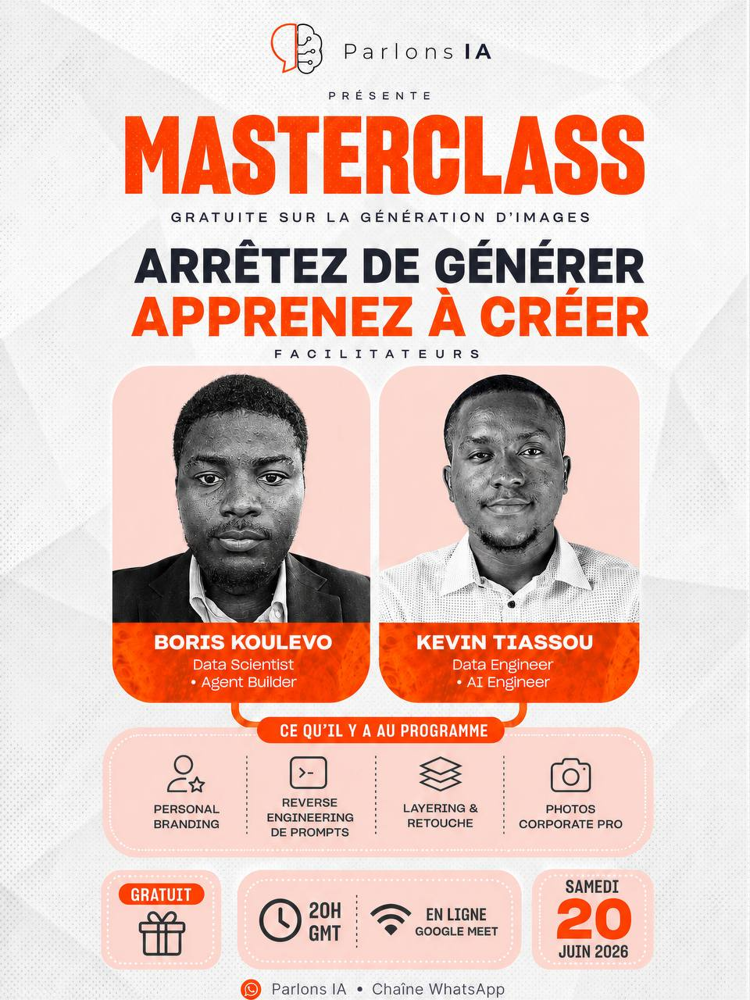

Arrêtez de générer.
Apprenez à créer.
Une session live pour apprendre à construire des visuels IA plus propres, plus cohérents et vraiment utilisables pour vos contenus, affiches et photos professionnelles.

Live pratique
Une session en ligne sur Google Meet, pensée pour montrer une méthode concrète.
Images IA
Prompts, composition, retouche, layering et amélioration des rendus.
Accessible
Gratuit, en ligne, avec les informations envoyées dans la chaîne WhatsApp.
Créer des visuels plus propres avec l'IA
L'objectif n'est pas seulement de générer une image jolie. On va voir comment partir d'une intention claire, guider le modèle et améliorer le rendu pour obtenir une image vraiment exploitable.
Personal branding
Créer des visuels cohérents pour se présenter ou renforcer son image.
Reverse engineering de prompts
Comprendre pourquoi une image fonctionne et reconstruire un prompt plus solide.
Layering & retouche
Combiner génération, retouche et amélioration pour éviter les rendus brouillons.
Photos corporate pro
Produire des portraits et visuels professionnels plus propres à partir de bonnes bases.
Une masterclass pour créer mieux, pas juste générer plus
Créateurs de contenu, entrepreneurs, étudiants, freelances ou curieux qui veulent produire des images plus utiles avec l'IA.
Partir d'une intention claire
Transformer une idée floue en direction visuelle exploitable.
Construire un prompt plus solide
Guider le modèle sur la composition, le style, les contraintes et le rendu attendu.
Améliorer le résultat final
Utiliser retouche, upscaling et itération pour obtenir une image plus propre.
Les informations pratiques et le lien Google Meet seront partagés dans la chaîne.
Suivre la chaîne